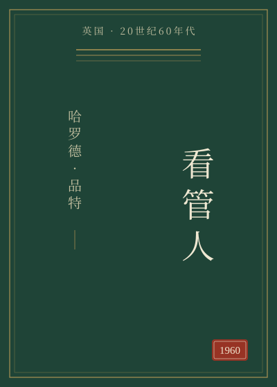
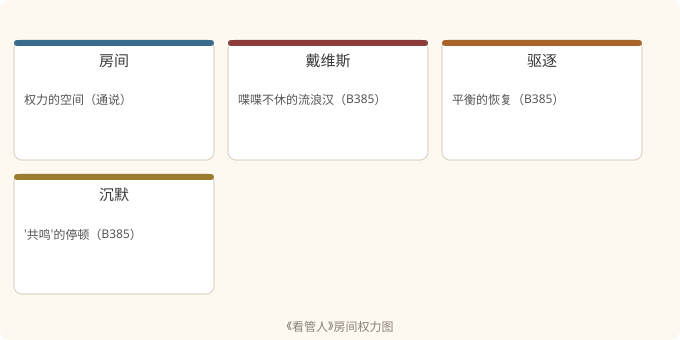

看管人
一、基本信息
| 作者 | 哈罗德·品特 |
|---|---|
| 成书/出版 | 1960年（Britannica B385：The Caretaker (1960)——'secured his reputation'） Harold Pinter — Encyclopaedia Britannica（百科全书） |
| 国别/地区 | 英国 |
| 时代 | 现当代 · 20世纪60年代 |
| 体裁 | 戏剧 |
| 语言 | 英语 |

《看管人》房间权力图（主题·结构图）
二、创作背景
Britannica（B385）：'secured his reputation'（确立声誉）——'a wheedling, garrulous old tramp comes to live with two neurotic brothers, upsetting their balance until they evict him'（一个花言巧语、喋喋不休的老流浪汉与两个神经质的兄弟同住，扰乱平衡直至被逐）。
Britannica（B385）：'Pinteresque'——'resonant silences'。
题材（通说待核）：戴维斯的'纸'与'鞋'——房间的权力。
三、内容脉络
（通说待核）流浪汉戴维斯与阿斯顿/米克兄弟。
（通说待核）'看管人'头衔的许诺与驱逐。
四、主要人物表
| 人物 | 身份 | 说明 |
|---|---|---|
| 戴维斯 | 老流浪汉 | （B385：wheedling, garrulous old tramp） |
| 阿斯顿/米克 | 两兄弟 | （B385：two neurotic brothers） |
五、主题与艺术特点
- '看管人'的权力游戏（书名语境——通说待核）。
- '共鸣的沉默'（B385）。
- 房间的归属（通说待核）。
六、影响与评论
- Britannica：'secured his reputation'（B385）。
Harold Pinter — Encyclopaedia Britannica（百科全书） - Britannica：2005诺奖（B385 交叉）。
Harold Pinter — Encyclopaedia Britannica（百科全书）
七、阅读建议
难点
- 三房间的空间政治。
- 'Pinteresque'停顿。
- 《看管人》中译名（《房屋管理员》）待核。
- 英文原版。
品特成名作；与《生日晚会》对读。
八、待核实
- 戴维斯/阿斯顿/米克人名核对（B385载tramp/brothers）。
- 1960年首演细节待核。
- 1963年电影改编说待核。